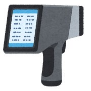

研究・開発
研究開発
新しい技術や製品のもとになる研究をする仕事。数年先の製品を見すえて、実験と検証をくり返します。

主な仕事
- 新しい材料・技術の研究や実験
- 試作品の設計と性能の評価
- 論文や特許の調査、学会発表
こんな人に向いている
- 一つのテーマを何年もかけて追いかけられる人
- うまくいかない実験も、原因を考えるのが楽しい人
- 論文や新しい技術の情報を読むのが苦にならない人
近いタイプ
就活16タイプ診断で、この職種に近いタイプです。
関係の深い学び
- 化学・材料
- 機械
- 電気電子
- 生命科学
学科が違っても目指せる職種がほとんどです。あくまで目安にしてください。
この職種がある企業の例
- トヨタ自動車
- 日立製作所
- 富士フイルム
- 花王
採用の有無や学校推薦の枠は年度によって変わります。就職課の求人票や各社の採用ページで確認してください。
研究・開発のほかの職種
- 品質保証製品が安全で、決められた基準を満たしているかを確かめる仕事。不具合の原因を調べて再発を防ぎます。
- データサイエンティスト・AIエンジニア大量のデータを分析したり、AIのモデルを作ったりして、会社の課題を解決する仕事です。
自分に近いタイプが分からない人は、診断してみましょう。20問・約3分です。
就活16タイプ診断へ